app/(tabs)/swing/index.tsx
스윙 대시보드
계좌의 총 자본금을 현금, 파킹 ETF, 보유 주식으로 나눠 보여주고, 종목마다 매입가와 현재가, 평가손익을 카드로 정리했습니다.
- 보유 중 손익과 누적 손익(추정 원금 대비)을 따로 계산해 보여줍니다.
- 국내/미국 탭을 바꾸면 통화와 시장이 함께 전환됩니다.
- 모의투자와 실전투자 계좌를 배지로 구분해 실수를 막습니다.
개인 프로젝트 · 모바일 + 백엔드 풀스택
이동평균선과 거래량 지표로 국내·미국 주식을 자동 스윙 매매하는 앱입니다. 전략 설정부터 백테스트, 주문 체결 알림까지 앱 하나로 관리합니다.
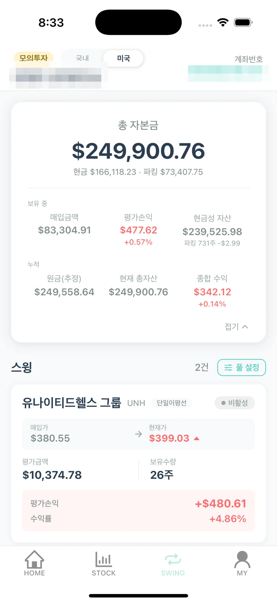
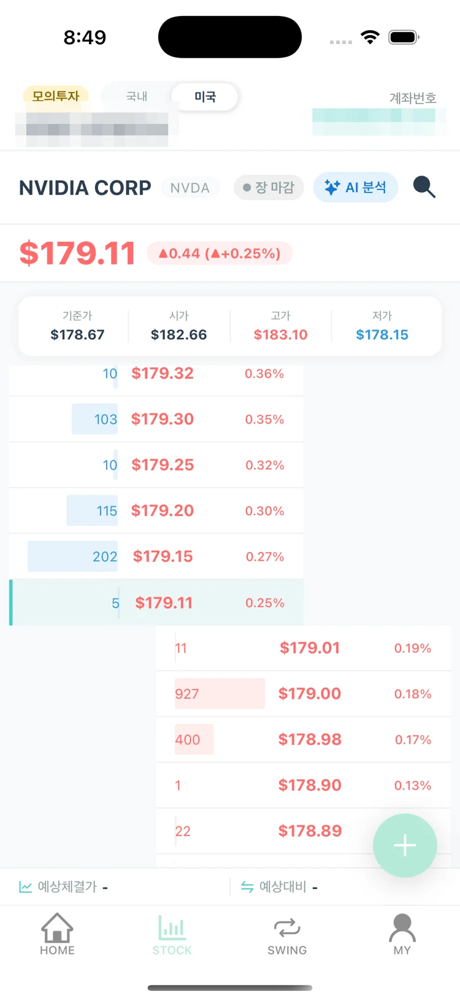
주요 기능
사용자는 종목과 계좌 단위 위험 한도만 정합니다. 신호 계산, 포지션 크기, 주문, 체결 확인은 백엔드 배치가 맡습니다.
app/(tabs)/swing/index.tsx
계좌의 총 자본금을 현금, 파킹 ETF, 보유 주식으로 나눠 보여주고, 종목마다 매입가와 현재가, 평가손익을 카드로 정리했습니다.
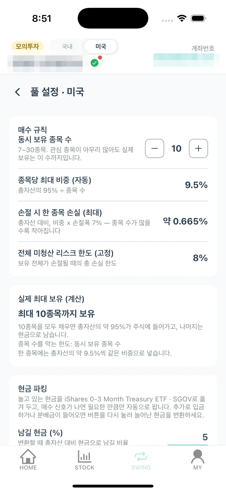
app/(tabs)/swing/pool.tsx · domain/pool
종목별로 금액을 나눠 배정하던 방식을 없애고, 계좌×시장 하나를 '풀'로 묶었습니다. 매수 금액은 총자산 대비 리스크 비율로 자동 계산됩니다.
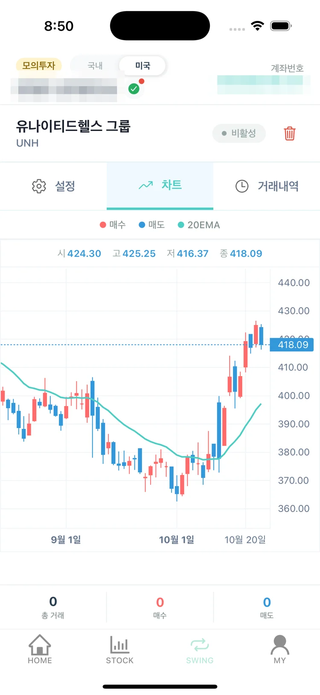
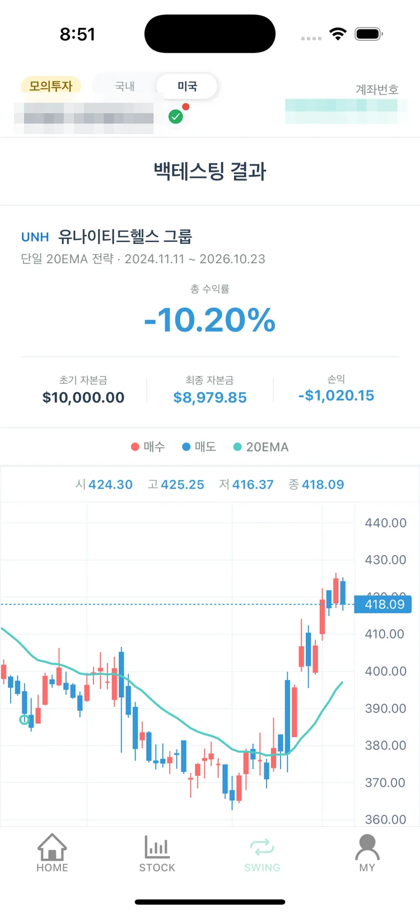
swing/detail.tsx · swing/backtesting.tsx
스윙 상세 화면에서 일봉 캔들과 20일 지수이동평균(20EMA), 실제 매수·매도 지점을 함께 봅니다. 같은 조건으로 최근 2년 데이터를 돌려 예상 수익률도 확인할 수 있습니다.
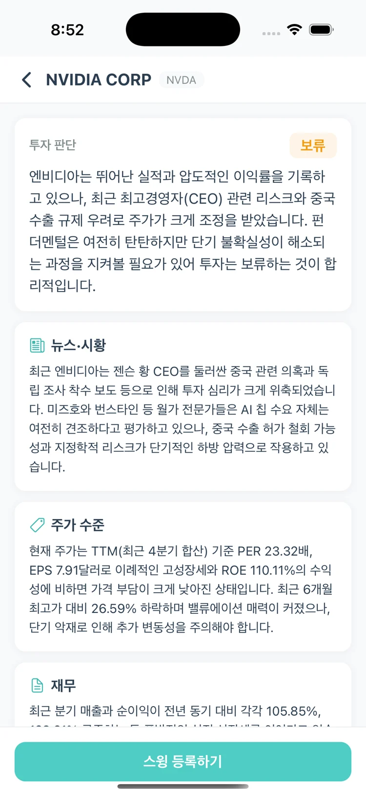
stock/price.tsx · review/[code].tsx · domain/stock_review
종목 화면에서 현재가와 10단계 호가를 보고, AI 분석을 요청하면 Gemini가 차트·재무·수급·뉴스를 모아 투자 판단(매수/보류/회피)과 근거를 정리합니다.
화면 구성
iPhone 16 Pro 시뮬레이터에서 모의투자 계좌로 캡처했습니다. 이름, 계좌번호, 프로필 사진은 모자이크 처리했습니다.
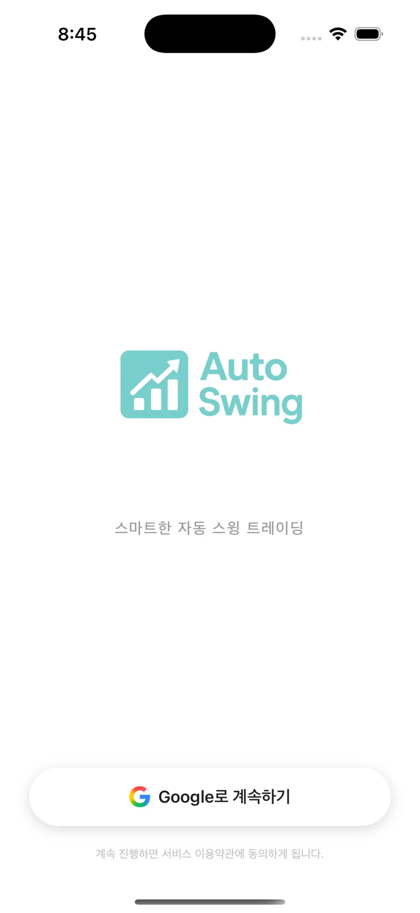
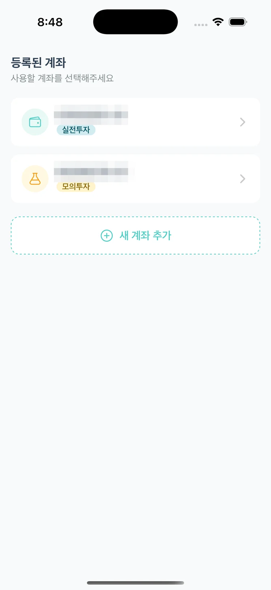
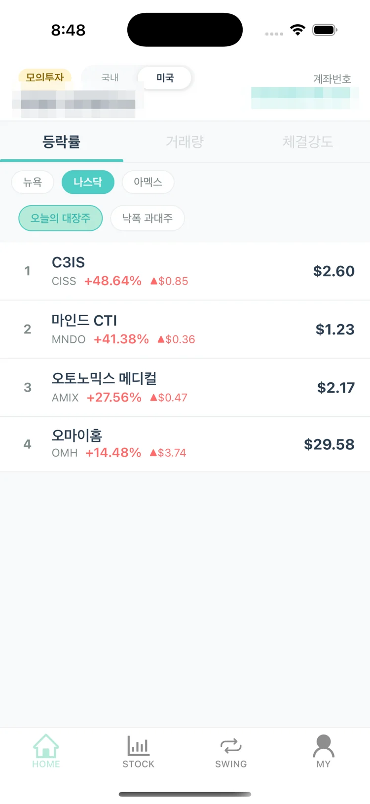
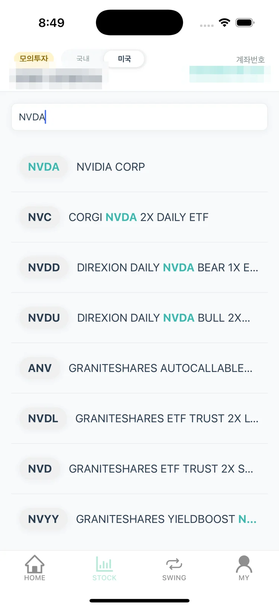
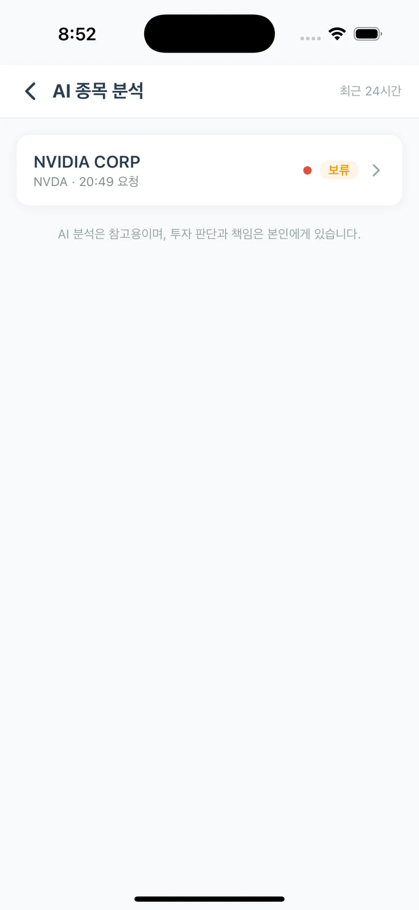
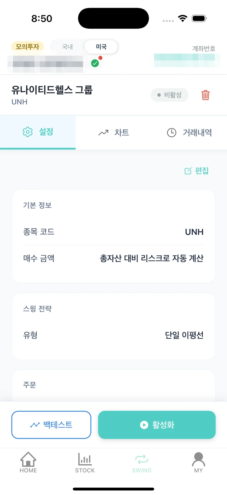
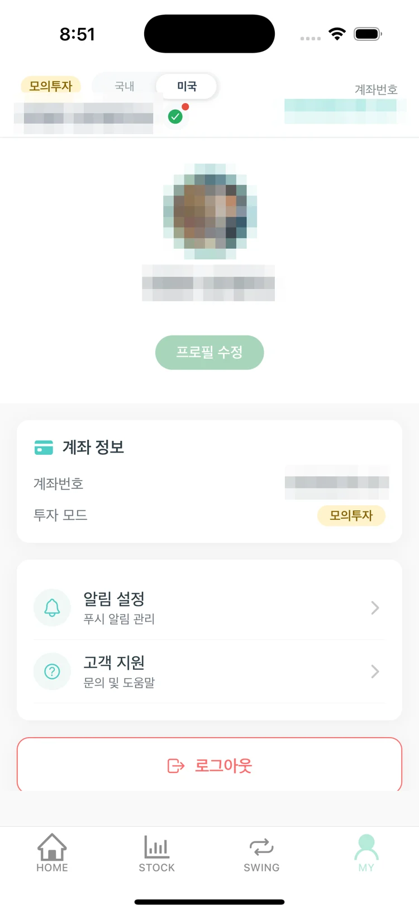
시스템 아키텍처
앱이 꺼져 있어도 매매가 돌아가야 하므로 신호 계산과 주문은 모두 서버 스케줄러가 맡고, 앱은 조회와 설정, 알림 수신만 합니다.
보안 · 인증
증권 계좌로 실제 주문이 나가는 서버라서 Google 계정이 털려도 다른 기기에서는 API를 쓸 수 없게 설계했습니다. 사용자 인증(JWT)과 별도로 기기 화이트리스트를 한 겹 더 두었습니다.
X-Device-ID 헤더를 먼저 확인한 뒤 JWT를 검증합니다. 허용 결과는 Redis에 5분, 거부 결과는 1분만 캐시해 승인 취소가 빨리 반영되게 했습니다.서버, DB, Redis 포트를 모두 127.0.0.1에만 바인딩했습니다. 외부에서는 Tailscale Funnel의 HTTPS 443으로만 들어오고, DB는 SSH 터널로만 접속합니다.
승인된 기기 ID만 API를 호출합니다. 헬스체크, 문서, 로그인 경로만 검사에서 뺐습니다.
서명과 만료만 보는 게 아니라 Redis의 refresh 토큰과 대조해, 서버에서 세션을 끊을 수 있습니다.
증권사 앱키, 시크릿, 계좌 정보는 AES로 암호화해 DB에 넣고, 사용할 때만 복호화합니다.
운영 · 모니터링
별도 클라우드 비용 없이 집 서버에서 운영합니다. Tailscale Funnel로 고정 도메인과 HTTPS 인증서를 무료로 받아, 공유기 포트를 열지 않고도 앱이 HTTPS로 접속합니다. 장애는 Sentry로 바로 알 수 있게 했습니다.
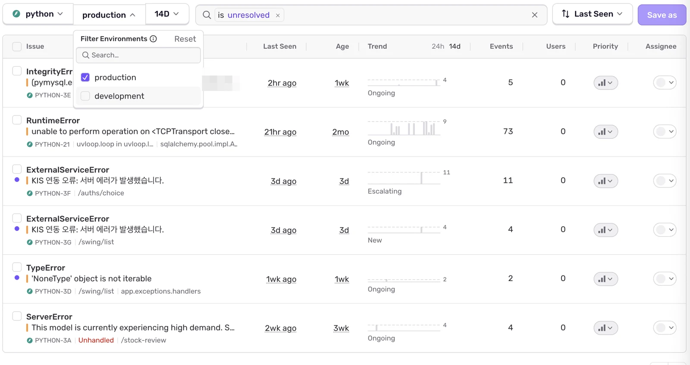
SENTRY_ENVIRONMENT 값으로 운영 서버와 개발 환경의 이벤트를 나눠 받습니다. 기본값은 development라서 설정을 빠뜨려도 개발 중 오류가 운영 알림에 섞이지 않습니다.
Tailscale Funnel이 *.ts.net 도메인과 TLS 인증서를 자동으로 발급하고 갱신합니다. Funnel 프록시가 127.0.0.1의 백엔드로 넘겨주므로 인증서 관리, 포트포워딩, 리버스 프록시 설정이 필요 없습니다.
개발 빌드는 __DEV__ 플래그로 localhost를, 릴리즈 빌드는 이 도메인을 바라보게 나눴습니다.
운영 컨테이너에서만 DSN을 넣어 켜고, 로컬 개발에서는 꺼집니다. before_send에서 4xx 성격의 도메인 예외는 버려서, 인터넷 스캐너가 /keyfile.json 같은 경로를 찔러도 쿼터가 줄지 않게 했습니다.
토큰 발급 오류 이벤트에 증권사 appkey가 평문으로 실려 간 적이 있었습니다. 기본 스크러버는 키 이름이 정확히 같을 때만 가리고 중첩 dict는 보지 않기 때문입니다. appkey, appsecret, access_token을 덴리스트에 더하고 재귀 탐색을 켜서, 전송 전에 서버에서 지우도록 고쳤습니다.
Sentry Uptime 봇이 60초마다 루트 경로를 확인합니다. 이 요청이 액세스 로그를 덮지 않게 필터로 빼고, 봇이 아닌 발신자만 X-Forwarded-For와 User-Agent로 기록해 이상 접근을 따로 볼 수 있게 했습니다.
미들웨어의 접근 거부를 직접 403 응답으로 바꿔, 차단된 요청이 500 오류와 Sentry 이벤트로 남지 않게 했습니다.
배포 · 인프라
Linux 홈 서버에서 Docker Compose로 DB, 캐시, 백엔드, CI를 함께 운영합니다. 이미지 빌드는 Jenkins가, 실행은 Compose가 맡도록 역할을 나눴고, 모든 포트를 인터넷에 열지 않는 것을 원칙으로 잡았습니다.
DB와 Redis가 healthy가 된 뒤에만 기동합니다. 30초마다 /health로 자체 헬스체크를 하고, 로그는 10MB × 5개로 순환합니다.
InnoDB 초기화까지 확인하는 헬스체크를 둡니다. 데이터는 호스트 볼륨에 두고, 외부 접속은 SSH 터널로만 합니다.
증권사 접근 토큰이 들어 있어 비밀번호와 protected-mode를 켜고, AOF로 재시작해도 세션과 락 상태를 유지합니다.
docker.sock을 쓰므로 탈취되면 호스트 전체가 위험합니다. 그래서 내 Tailscale 기기에서만 접속되게 묶었습니다.
호스트 도커 데몬으로 이미지를 빌드하고 빌드 번호로 태그합니다. 같은 데몬에 남으니 레지스트리가 필요 없습니다.
python:3.12-slim에 TA-Lib C 라이브러리를 설치하고, uv sync --frozen으로 lock 파일 그대로 의존성을 맞춥니다. 테스트, 문서, 시크릿 파일은 .dockerignore로 뺐습니다.
DB와 Redis는 그대로 두고 백엔드 컨테이너만 다시 만듭니다.
문제가 생기면 이전 빌드 번호를 지정해 바로 되돌립니다.
매매 엔진
스윙마다 SIGNAL 값 하나로 상태를 관리합니다. 전량 매도 뒤에는 바로 0으로 돌아가지 않고 쿨다운 두 단계를 거쳐, 남은 매수세 때문에 곧바로 다시 사는 일을 막습니다.
진입 조건을 2회 연속(10분) 확인하면 매수
청산선을 따라가며 손절·트레일링
+50%에서 절반 매도, 나머지 계속 보유
전량 매도 후 OBV 유출을 기다림
자금이 다시 들어오면 0으로 복귀
문제 해결
app/external/http_client.py · trading/order_executor.py
app/external/rate_limiter.py
app/external/kis_api.py
trading/parking.py · pool_allocator.py
contexts/backEndApi.ts
auto_swing_batch.py
기술 스택
| 영역 | 기술 | 선택 이유 |
|---|---|---|
| 모바일 | Expo SDK 54, React Native, TypeScript, expo-router | 파일 기반 라우팅으로 탭·스택 구조를 단순하게 유지하고, EAS Update로 JS 변경을 바로 배포 |
| 상태 관리 | Zustand | 계좌·시장 선택처럼 여러 화면이 공유하는 상태만 전역으로 두기 위해 |
| 통신 | Axios 인터셉터, expo-secure-store | JWT 자동 갱신과 기기 ID 헤더를 한곳에서 처리 |
| 백엔드 | FastAPI, Pydantic v2, async SQLAlchemy 2.0, uv | 증권사 API 대기 시간이 길어 비동기 I/O가 필수 |
| 배치 | APScheduler (Asia/Seoul, America/New_York) | 미국 서머타임을 포함해 두 시장 장 시간에 맞춘 크론 |
| 지표 계산 | pandas, TA-Lib | EMA, ADX, ATR, OBV 등 검증된 구현 사용 |
| 저장소 | MariaDB, Redis | 거래 기록은 RDB, 토큰·락·전략 상태처럼 짧게 사는 값은 Redis |
| 외부 API | 한국투자증권 Open API, Google Gemini, Finnhub, Expo Push | 국내·미국 매매, AI 분석, 미국 재무, 푸시 알림 |
| 운영 | Docker Compose, Jenkins, Tailscale Funnel, Sentry, pytest | 홈 서버에서 포트를 열지 않고 공개 HTTPS 제공, 641개 테스트로 회귀 방지 |